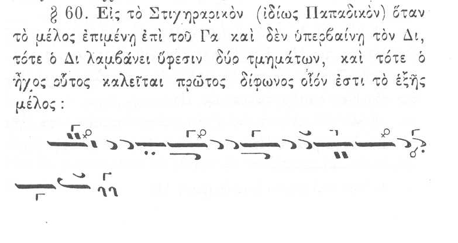
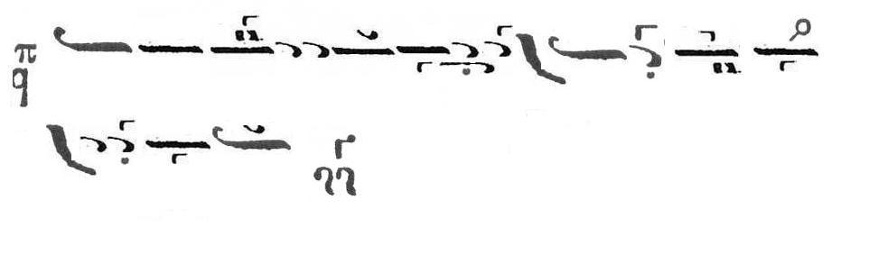

Κοινωνικόν των Αγίων Πάντων / Communion Hymn of the Feast of All Saints
Score(scanned
and processed by B. Zacharis)
The same score analysed by G. K. Michalakis
[
jpg,500 Kb]
Audio
Australian Byzantine Choir [
mp3, 6.7 Mb]
G. K. Michalakis [
wma, 800 Kb]
Discussion
On the flattening of DI in this
thesis:
G. K. Michalakis
Now, although Di is lower in first mode, it is NOT hyphesis as the
Australian Byzantine Choir does it in the Koinonikon (EXCEPT if an
hyphesis is put in the score, which I don't have....). So, Lower that
piano Di is NOT to be confused with Di Hypesis, which is even lower...
D. Koubaroulis
There is no yphesis in the score. The ABC intentionally chose to do
it yphesis (flat).
G. K. Michalakis
Why?????
D. Koubaroulis
It is not unusual in classical compositions for DI to be yphesis
when the melody moves around GA.
G. K. Michalakis
NO.... such an elxeis has a PRECISE fuction, and there is NO reason
for it in this piece... it sounds IMMEDIATELY ackward to one who
knowns of its parsemonious use, and it just doesn't stick with the
lines that precede and follow...
D. Koubaroulis
Often, the yphesis is not written but is still applied.
G. K. Michalakis
I'm not so sure... this is all CONTEMPORARY muscicology. Di is
NATURALLY a bit low in Psaltiki, there is no reason to turn the thing
to some "pathitikos"... ABSOLUTELY no reason at all...
D. Koubaroulis
I had another look at that as I was speaking from memory. The score
*does* have an yphesis (flat) on DI as do many slow classical
compositions in similar theseis. So the ABC is correct and this is not a
contemporary musicology invention. The issue remains whether this DI
flat is the same as Sabah or not. I maintain my position that the
yphesis is often not written but performed.
G. K. Michalakis
From the above one can easily guess my answer: what does plagal
first have to do with SABAH????
The only place for "sabah" is when changing from heptaphonic diatonic
ZO to ZO enharmonic OF SAME PITCH, and when coming back to diatonic
tetraphonos, DI is LOWERED to as to bring the melody back to
its "basis" and to ists special intervals. Such passages usually have
plagals second or Kliton associated. And this "sabah" acts only to
help bring back the melody to the special Ga... So, it's not
really "SABAH" from there on down to Pa (because the intervals are
already smaller)...
Now, that Pringos and auto-proclaimed Pringos students made "belly
dancing" sabah liturgics in "first mode pathitikos" is does another
one of them classical "massacres" of what is NOBLE in psaltiki.... a
nice first mode, with a lower than piano Di WITHOUT any
SABAHISATION....
D. Koubaroulis
I didn't understand your explanation about
Sabah. Can you post a score with your case of Sabah.
G. K. Michalakis
Koinonikon "Eis Mnemosynon.." Barys_Mode [mp3,6.2 Mb]
Koinonikon of Tuesday by Petros, with "special" Barys intervals.
From memory, Chatzimarkos does a very nice "Barys diatonikos" in the
Psalmos 50 with "Anastas of Ihsous" as well... I hope someone can
find this recording of his... the situation is similar:
The ison remains on Zo diatonic. The Heptophonic Zo becomes
ENARMONIC, with Ano Ni and Ano Pa lowered a bit ("special interval"
as applied to the octave).
Coming back down, the Di is in HYPHESIS, and the Ga is Lower than
diatonic, the Bou lower than diatonic, the Pa lower than diatonic,
the Ni more or les in its position, Zo diatonic in its position...
("special intervals".
Listen to the line "Eis mnimosinon aiOOOOOOOOOOOnion estai dikaios,
Alliluia".
D. Koubaroulis
I have always
thought that Sabah is the diatonic scale of First mode with DI flat and
ZW flat (and sometimes PA' flat too). I have also always thought that
certain lines of (what I call) Sabah as borrowed between pieces of First
and Plagal First mode as happens with a whole lot of other lines.
G. K. Michalakis
That's the way many use Sabach in church today, turning it it into
a "fundamental" mode..... "Sabach" lines are TRANSITIONAL melody
lines for that one particular case in Zo diatonic. The rest
is "contermporary" makamisation.
And having theard this, the "researcher" pull down Di left and right,
hyphesis or no hyphesis.
Listen to how I do the hypesis on the Kekragarion (it has some bad
intervals elsewhere, I'll re-do it, but the Di hyphesis is all
right: not too low (not sabach)). There is no reason to make first
mode "pathetic"... I doesn't need to suffer sany more that it
already does.
All in all, "pathitikos" EXISTS in Dimotiki, as well as "ousak", as
a whole "mode" = makam in itself.
I NEVER heard ANY of my teachers apply it as such in CLASSICAL pieces
EXCEPT in Barys diatonikos.
So, it is FIRST mode for DIMOTIKI...
It is TRANSITIONAL barys in Ecclesiastical music (and all Liturgika
written by whomever in "pathetikos" should be put aside, and
all "RESEARCHER" choirs applying Di super hyphesis should do MORE
listening to Iakovos than to Priggos... (without knowing what to listen for)...
D. Koubaroulis
A more scientific name of this mode is First Diphonos Chromatic
Mode, but I am using the corresponding maqam name for brevity.
G. K. Michalakis
OK... but not for CHURCH...
D. Koubaroulis
Another name (that Karas revived from the manuscripts for this mode is "Na'os").
G. K. Michalakis
WHICH ecclesiastical manuscripts? (I may be wrong in my LIMITING of
this mode to specific passages... but from all Three teacher
transcriptions I have heard chanted by my teachers, there was
no "pathitikos"...).
D. Koubaroulis
I tend to avoid using the name "pathitikos"(=passionful?) which is
confusing (since other modes are passionful too).
G. K. Michalakis
Don't just avoid the NAME, avoid the entire TROPOS = makam in
church..
D. Koubaroulis
Karas doesn't quote a specific source for the name "Naos" but
he implicitly mentions that the mode he refers to (in particular, "Ton
tafon sou Soter") is "the one described by the Byzantines as Naos" ("o
para tois Byzantinois martyroumenos Naos"). The name, according to Karas
comes from the musical name of Third Mode (Nana) and has to do with the
fact that First Mode Diphonos moves around Nana (two notes higher than
its basis).
S. Gugushvili:
This is what the Committee of 1881 tells us about First mode Diphonos:

D. Koubaroulis:
Boudouris in his chapter about hyphesodieseis he mentions that a plain (not crossed) flat on DI in First mode is a semitone flat. See the last bits of this [pdf, 220 Kb]
G. K. Michalakis:
This particular line Shota posted can be sung as Spatheion melos, and
it usually precedes a large jump to ano Ni and Pa (natural).
As spatheion, we may wish to chant Di quite close to Ga.What I was trying to say is
that Di Hyphesis is NOT systematically = spatheion = sabach ± = diphonos.
If at every Di hypesis we bump into we are to turn the mode to
Sabach, then we are really nturning the piece into something else.
All pieces with systematic Di too low upon hyphesis sound ACKWARD at
once. However, doing Spatheion melos in the line scanned by Shota
(and there are references where this very line is written a spatheion)
is not at all incoherent.
I repeat: spatheion is TRANSITIONAL.... and EVERY di hyphesis in
first mode is NOT that of a Di spatheion melos....
S. Gugushvili:
Here's my translation from Dimitri Giannelos' theoretikon (in French, La musique
Byzantine):
When the melody evolves around Ga, this note attracts Di towards it. This creates the new scale
which gives rise to the first mode diphonos. Here is a characteristic phrase:

{kind=link}
{kind=link}